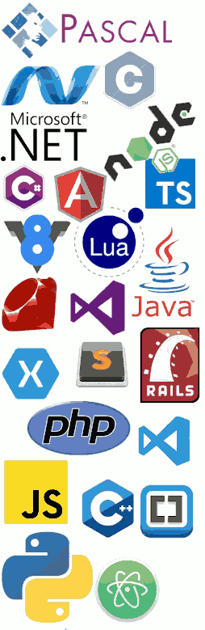

Java
Lenguaje de programación orientado a Objetos. Es muy simple de usar y utiliza una sintaxis similar a C/C++. Es muy portable, de hecho se escribe una vez y se ejecuta en cualquier plataforma. Java funciona mediante la compilación e interpretación simultánea durante el proceso de ejecución de órdenes
JavaScript
Posee una estructura sencilla con sintaxis similar a C/C++/Java. Se ejecuta más rápido que otros lenguajes y favorece la detección de los errores. Es compatible con otros lenguajes, como: PHP y Java. Se actualiza de forma continua con nuevos frameworks y librerías, esto le asegura relevancia dentro del sector.
Python
Es un lenguaje interpretado. Si existen errores en el código del programa, su ejecución se detiene. Así, los programadores pueden encontrar errores en el código con rapidez. Un lenguaje fácil de utilizar y utiliza palabras similares a las del inglés, resultando su lectura cercana al idioma humano. A diferencia de otros lenguajes de programación, Python no utiliza llaves. En su lugar, utiliza sangría. Los programadores no tienen que anunciar tipos de variables cuando escriben código porque Python los determina en el tiempo de ejecución. Se puede utilizar como lenguaje estructurado u orientado a objetos.
SQL
Diseñado para administrar y recuperar información de los sistemas de gestión de bases de datos relacionales, SQL se caracteriza por el uso del álgebra y el cálculo relacional para realizar las consultas. Está estandarizado, lo que ocasiona que diferentes implementaciones apenas tengan diferencias. Tiene la función de preservar la integridad de los datos, asegurándose de que sean válidos, correctos y completos. También protege la base de datos de corrupciones provocadas fallos del sistema o actualizaciones inconsistentes. Es un lenguaje muy versátil a la hora de implantar soluciones y permite definir diferentes formas de ver los datos para satisfacer las demandas específicas de los usuarios. Es un lenguaje unificado, claro y de fácil comprensión. Su estructura incluye un elevado nivel de inglés, de manera que las sentencias en SQL son fáciles de entender y aprender.
C#
C# es un lenguaje de tipado estático y multiparadigma, aunque principalmente orientado a objetos. Microsoft presenta actualizaciones muy frecuentes, por lo que resulta bastante evolucionado, ofreciendo herramientas poderosas para los desarrolladores.
Rust
Está orientado a objetos. Tiene una interfaz simple. Cuenta con gestión automática de guardado. Es Inmutable, concurrente y multiparadigmático. Posee compilación nativa y estática. Es multiplataforma. Tiene control de la memoria explícita. Es práctico, potente, seguro y veloz. Permite cadenas UTF8. Sirve para escribir herramientas de línea de comandos, aplicaciones web y programas de red. Además, este lenguaje se puede emplear para la programación de bajo nivel. Se creó para tener la posibilidad de alcanzar la velocidad de C++, pero evitando los problemas de memoria y minimizando los errores en el código
Go
Lenguaje de programación compilado de código abierto (Open Source). Su principal objetivo está en la productividad, algo imprescindible para quien ejecute con sistemas multiplataforma. Es un lenguaje concurrente. Soporte de miles de conexiones en el mismo programa. Pensado para utilizarse en un servidor que consuma menos recursos. Multiplataforma. Permite instalarse en múltiples sistemas operativos, como GNU/Linux, Windows, Mac OS X o FreeBSD. Orientado a objetos, imperativo y estructurado. Uso de tipado estático aunque admite el tipado dinámico.